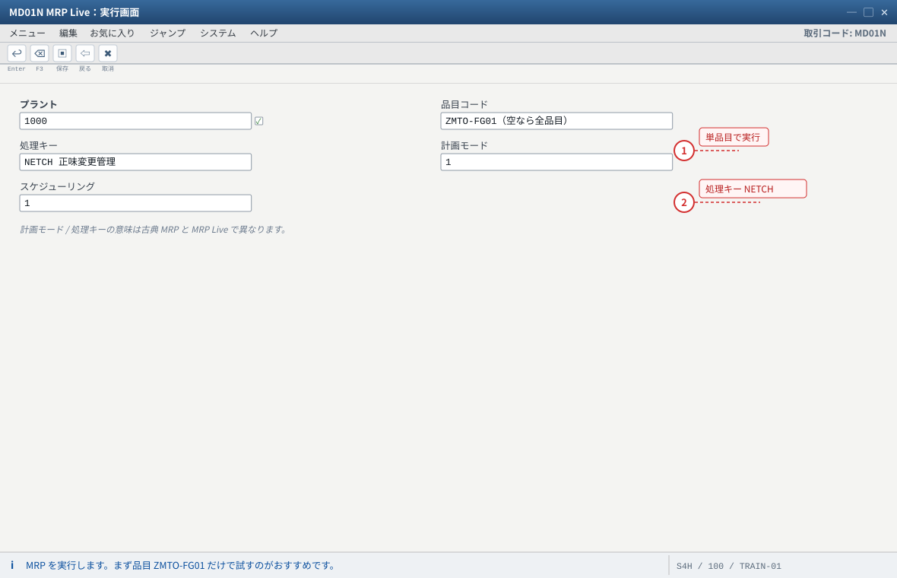
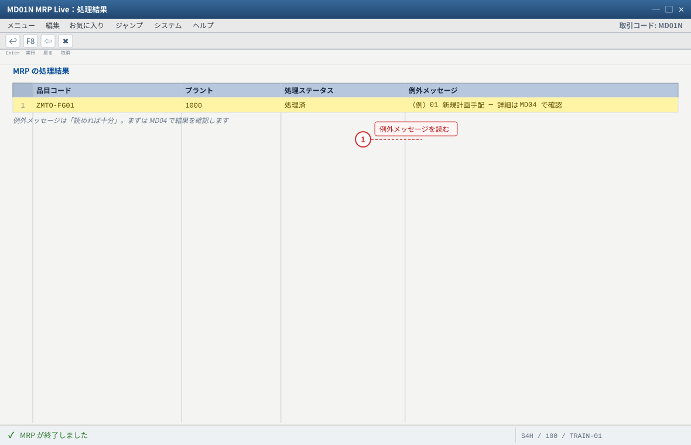
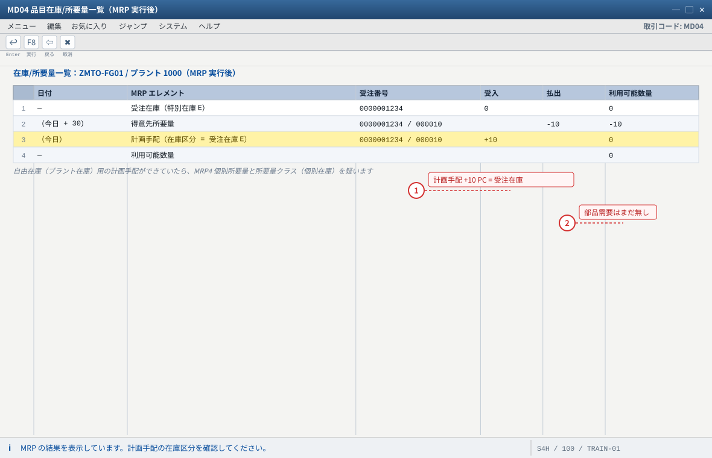
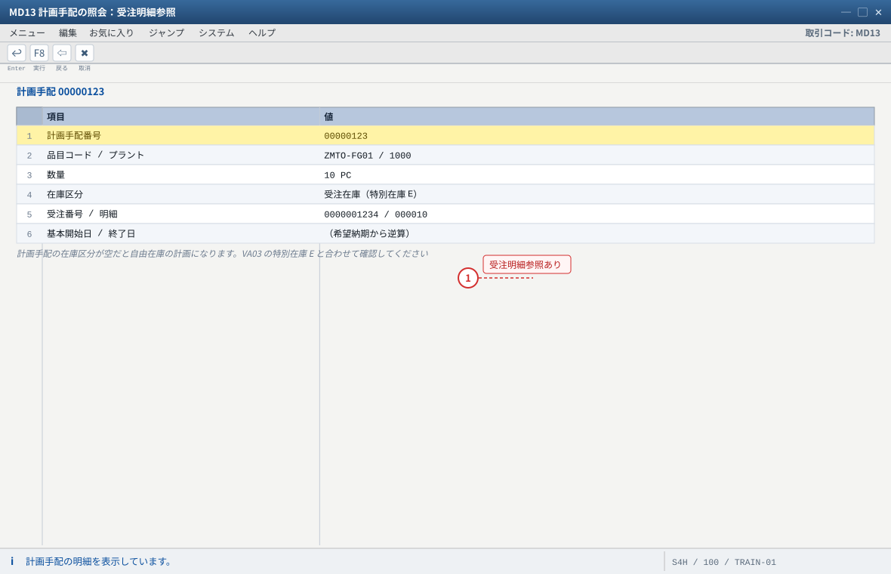
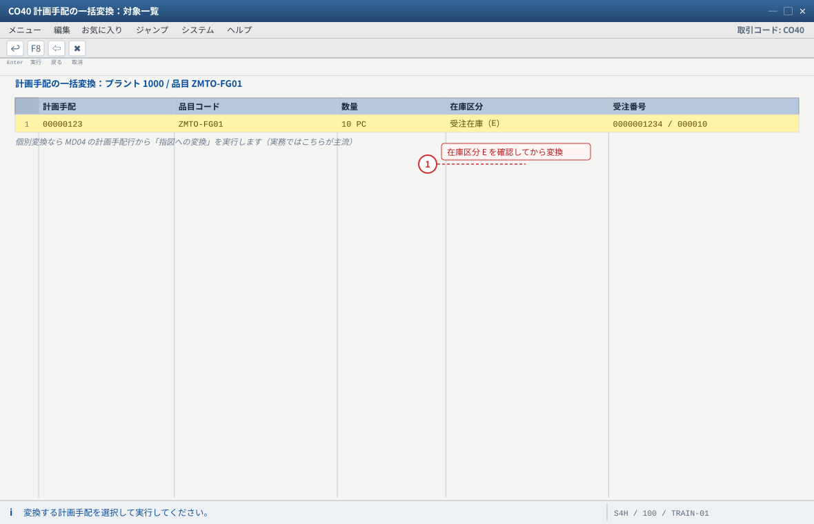
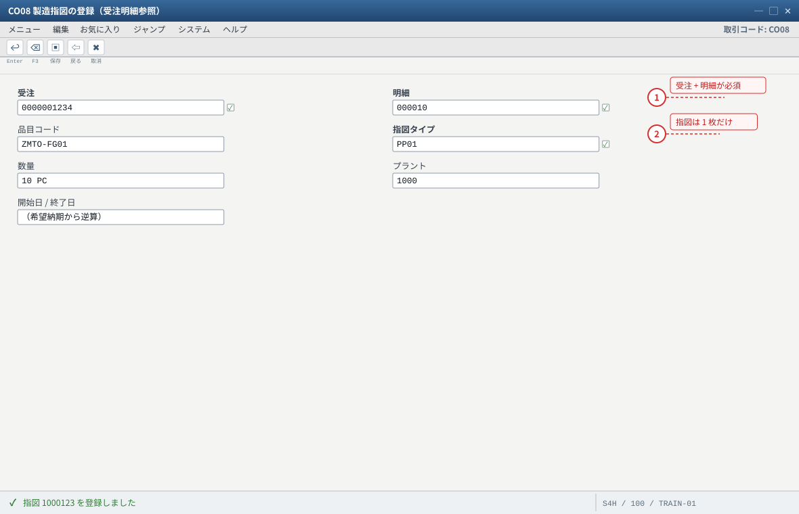
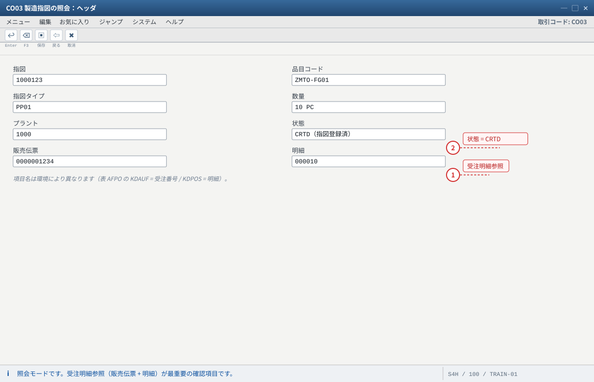
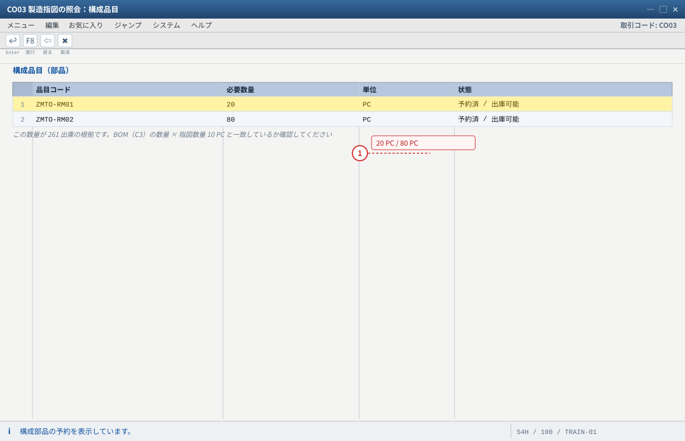
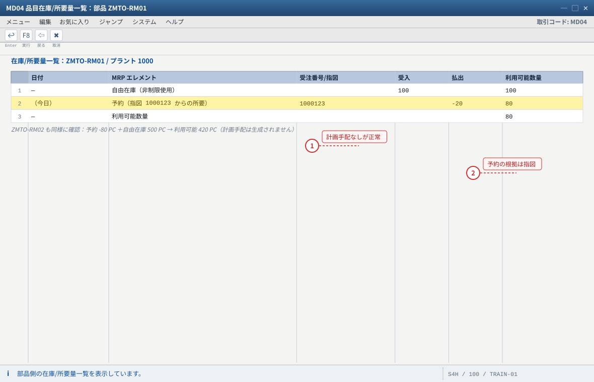

练习② MRP 実行与製造指図の登録
关于本页的「画面イメージ」：这些图是按 SAP GUI 标准布局重绘的示意图，不是实机截图。字段名、字段顺序、按钮位置会因版本与自定义而不同，请以自系统的画面为准（各 STEP 的「自系统での確認方法」里写了确认用的 T-code 与表）。若是想换成实机截图，把同名
.png 放进 assets/gui/ 后执行 python3 tools/swap_gui_images.py <site> --apply 即可一键替换。本练习完成什么
把练习① 建立的「得意先所要量」变成实物生产指令：跑 MRP → 生成受注在庫（E）用の計画手配 → 转成製造指図（关联受注明細、带部品预约与入库预定）。
预计 60 分钟。做完的状态：计划手配/指图 10 PC、部品预约 20/80、完成为止还没动库存（那是练习③）。
1 MD01N / MD02
MRP 実行
MRP 実行
→
2 MD04 確認
計画手配 +10（E）
計画手配 +10（E）
→
3 MD13 計画手配
受注明細参照
受注明細参照
→
4 CO40 / CO08
製造指図
製造指図
→
5 CO03 指図確認
部品予約・入庫予定
部品予約・入庫予定
→
✓ 验收
2-1 MRP の実行（MD01N：MRP Live）
输入值（MD01N）
プラント : 1000 品目 : （空＝プラント全体）／ ZMTO-FG01（単品目で試す場合） 処理キー : NETCH（正味変更管理）— 変更のあった品目だけを計画 計画モード : 1（標準的な選択。値の意味は項目の F1 ヘルプで确认） スケジューリング : 1（基本日付のスケジューリング） ※ S/4HANA ではこれが「MRP Live」。従来の MRP リストは作成されず、結果は MD04 で見る点に注意
MD01N→ プラント1000、処理キーNETCH、計画モード1、スケジューリング1。- 「画面項目の選択」で 品目
ZMTO-FG01を指定すればその品目だけを処理できます（练习环境推荐：先单品目，确认结果后再全プラント）。 - 执行（Enter / F8）→ 结果一览：确认
ZMTO-FG01处理后「例外メッセージ」列没有红色异常（例：01 新規計画手配、10 開始日遅延 等，先能读就好）。 - 备选：
MD02（単品目 MRP）→ 品目ZMTO-FG01/ プラント1000/ 処理キーNETCH/ 計画モード1/ 明細リスト ON → 执行。结果同上看MD04。
S/4HANA 的注意点
① MRP Live 不生成 MRP 列表（
MD05/MD06 系）→ 一律用 MD04；② 古典 MRP 与 MRP Live 在「計画モード/処理キー」的实际含义上有差异（参考 KBA 2640393、Note 1914010）；
③ Public Cloud 只提供 MRP Live 类应用。练习时若结果与预期不同，先确认你跑的是哪一种 MRP。
- 1 品目を指定すると単品目だけが処理対象になります（練習環境で結果を追いやすい）
- 2 NETCH は「変更のあった品目だけ」を計画する処理キーです
自システムでの確認：S/4HANA の MRP Live は MRP リスト（MD05/MD06）を作りません。結果は必ず MD04 で確認します。

- 1 赤い異常（例：10 開始日遅延）が出ていても、内容は MD04 で確認できます
自システムでの確認：MD02（単品目 MRP）でも同じ結果が得られます。結果は MD04 で見ます。
2-2 結果確認：計画手配が「受注在庫」で生成されたか（MD04）
MD04→ 品目ZMTO-FG01/ プラント1000。- 对照下表逐行确认（最关键的是第 2、3 行的「在庫区分/受注番号」）：
| MD04 の行 | MRP 実行後の期待値 | 説明 |
|---|---|---|
| 受注在庫（特別在庫 E） | 0 PC | まだ入庫していない |
| 得意先所要量（受注 0000001234/000010） | -10 PC | 练习① 的成果 |
| 計画手配 | +10 PC、在庫区分 = 受注在庫（E）、受注番号・明細付き | MTO 成功的证据：需求被 MRP 吸收，且生成了「只服务这张受注」的补货元素 |
| 利用可能数量 | 0 PC | 需要与补货相抵 |
| 部品（RM01/RM02）の所要 | この時点ではまだ無し | 部品需求在指图阶段生成（BOM 展开 → 予約），不是计划手配阶段 |
- 选中「計画手配」行 → 「明細」/双击 → 确认：品目、数量 10、基本開始日/終了日（按受注纳期倒排）、品目/在庫区分/受注明細。
- 想直接看计划手配单体：
MD13（計画手配の照会）→ 计划手配番号 → 确认「品目データ」与「得意先データ（受注番号・明細）」。 - 若生成了自由在庫（プラント在庫）用的计划手配（没有受注号）：
① 品目MM03MRP4「個別/包括所要量」是否为「個別所要量のみ」；
② 所要量クラス（OVZG）是否含 個別在庫；
③ 受注明細的 特別在庫（VA03）是否为E；
④ 计划手配的「在庫区分」字段是否被手改过——以上任一处不对，都会让它落回自由库存。 - 若根本没有计划手配：见下方故障表（多半是 MRP 侧参数）。
判断口诀（再强调一次）
MD04 に出ない → SD 側（所要量転送・明細カテゴリ）。出たが補货が出ない → PP 側（MRPタイプ・手配タイプ・批量・MRP 対象）。
補货が出たが受注在庫でない → MRP4 個別所要量 と 所要量クラス（個別在庫）。

- 1 計画手配の在庫区分が受注在庫（E）＝ MTO 成功の証拠。受注番号・明細まで付いています
- 2 部品（RM01/RM02）の需要はこの段階では出ません。BOM 展開は指図の予約で起こります
自システムでの確認：MD13（計画手配の照会）で計画手配単体の「品目データ」「得意先データ（受注番号・明細）」を確認できます。

- 1 受注番号が入っている計画手配は、その受注のためだけの補貨です（MTO のゴール）
自システムでの確認：項目名はバージョンにより異なります。在庫区分（特別在庫区分）が表示されない場合は「項目」で追加してください。
2-3 製造指図の登録（3 つのやり方）
| 方法 | 事务码 | 向き | 要点 |
|---|---|---|---|
| 計画手配 → 指図（個別変換） | MD04 の计划手配行から「指図への変換」/ CO40 | MRP 结果转指图，最贴近实务 | 转换时指图继承受注在庫与受注明细参照 |
| 計画手配 → 指図（一括変換） | CO41 | 多件一次转换 | 输入プラント/品目范围 → 选择计划手配 → 一括変換 |
| 受注紐づき指図を直接登録 | CO08 | 跳过 MRP 直接建指图（练习/紧急时） | 必须输入受注番号 + 明細番号，否则不会进受注在庫 |
- 推荐路径（CO40）：
MD04→ 光标选中「計画手配」行 → 「指図への変換（Umwandeln）」（或CO40→ 输入计划手配番号）→ 确认指図タイプ（PP01）与数量 10 → Enter → 「指図登録」→ 记下指図番号。 - 直接登録（CO08）：
CO08→ 受注番号0000001234/ 明細000010→ Enter（品目与数量会自动带出）→ 指図タイプPP01、数量10、開始日/終了日按希望纳期倒排（可留默认）→ 「指図登録」→ 记下指図番号。 - 若同一次练习里两件都做了（CO40 + CO08），你会得到两张指图 → 库存会多出一份。练习中允许，但请明白：MTO 的 1 张受注明細原则上对应 1 张制造指図（组立处理战略 82 甚至是 1:1 强制）。收尾时用
CO02→ 「削除フラグ/技術完了（TECO）」处理多余指图。

- 1 変換時に指図が受注在庫と受注明細参照を引き継ぎます。在庫区分が空の計画手配は選ばないこと
自システムでの確認：練習② の推奨経路は MD04 → 計画手配行 → 「指図への変換」（または CO40 に計画手配番号を入力）。

- 1 受注番号と明細番号の入力が必須。これが無いと指図が受注在庫に入りません
- 2 CO40 と CO08 を両方やると指図が 2 枚でき、在庫が二重になります（1 明細 = 1 指図が原則）
自システムでの確認：余分な指図は CO02 で削除フラグ / 技術完了（TECO）にして整理します。
2-4 製造指図の確認（CO03）— 证明「这张指图是这张受注的」
CO03→ 指図番号 → Enter（照会）。- 「ヘッダ」タブ：确认 品目
ZMTO-FG01、数量 10、指図タイプPP01、プラント 1000、以及最关键的 受注明細参照（販売伝票 + 明細）。
SAP 表层面：AFPO-KDAUF（受注番号）/AFPO-KDPOS（明細）。用SE16N输入指図番号即可核对。 - 「構成品目（部品）」タブ：应看到
ZMTO-RM0120 PC、ZMTO-RM0280 PC，且状态为「予約済/出庫可能」——这就是 261 出库的依据（BOM 展开的结果）。 - 「入庫」相关タブ（または ヘッダの入庫予定）：「入庫予定 10 PC」应指向入庫先 = 受注在庫（特在 E）+ 受注番号。
- 「状態」タブ：此时为 CRTD（指図登録済），还没 REL（解放）。实务上出库/报工前需要「指図の解放（Freigabe）」。练习③ 里先解放再动库存。
- （可选）
COOIS（製造指図一覧）→ 用受注番号 / 品目筛选，确认指图能按受注检索出来；也可以用MD04的「得意先別／受注別」表示切替来确认。

- 1 販売伝票 + 明細が入っている＝この指図はこの受注のために作られた、という証明になります
- 2 状態はまだ CRTD。出庫・報工の前に練習③ で解放（REL）します
自システムでの確認：SE16N → AFPO で KDAUF / KDPOS を直接確認できます。

- 1 予約数量が BOM × 10 PC になっていること。ずれていると在庫と原価が狂います
自システムでの確認：入庫予定は受注在庫（特別在庫 E）+ 受注番号を指します。MB31（指図への入庫）でも同じ入庫ができます。
2-5 部品側の確認（MD04 on RM01 / RM02）
MD04→ 品目ZMTO-RM01/ プラント1000。- 预期：予約 -20 PC（指图からの所要）＋ 自由在庫 100 PC → 利用可能 80 PC、計画手配は生成されない（在庫で足りるため）。
- 同理
ZMTO-RM02：予約 -80 PC ＋ 在庫 500 PC → 利用可能 420 PC。 - 若部品出现计划手配（＝在庫不足），说明练习环境初期库存不足 —— 用 C1 的方法补投入库，或接受这个结果继续（后续需跑采购流程，见练习⑤ 发展课题）。

- 1 在庫で足りるので部品には計画手配が出ません（部品を購買で賄うのは練習⑤ の発展課題）
- 2 予約は「指図が部品を確保した」というサイン。指図番号 1000123 が根拠です
自システムでの確認：部品に計画手配が出た場合は初期在庫不足です。C1 の方法（561）で補充するか、そのまま購買フローに進めます。
期待结果汇总（本练习做完）
| # | 确认项目 | 期待值 | 确认方法 |
|---|---|---|---|
| 1 | 計画手配 | 10 PC、在庫区分 = 受注在庫（E）、受注番号付き | MD04 / MD13 |
| 2 | 製造指図 | 1 张（10 PC）、状態 CRTD、受注明細参照あり | CO03 / SE16N: AFPO |
| 3 | 部品予約 | RM01 20 PC / RM02 80 PC、予約済 | CO03 構成品目 / SE16N: RESB |
| 4 | 入庫予定 | 10 PC → 受注在庫（E、受注番号付き） | CO03 入庫予定 / MD04 |
| 5 | 部品の手配 | 在庫で充足（計画手配なし、予約のみ） | MD04 on RM01/RM02 |
| 6 | 受注の状態 | 受注明細 = 未処理 → 「指図登録済」。在庫はまだ 0 | VA03 明細 / MMBE |
つまずきと対処（本练习版）
| 症状 | 最可能的根因 | 确认 / 対処 |
|---|---|---|
| MRP 後も計画手配が出ない | ① MRPタイプが ND/空白 ② 手配タイプが空白 ③ ロットサイズが数量 0 を生む④ 品目が MRP 対象外（MRP グループ/計画ファイル/プラント違い） | MM03 MRP1 を确认（PD / E / EX）。MD04 の品目・プラントが ZMTO-FG01/1000 か确认 |
| 計画手配は出るが自由在庫用になる | MRP4 個別/包括所要量 が空、或 所要量クラスに個別在庫なし | C2・C10。修正后把受注再保存一次（或 VA02 → 明細 → 再転送/再計画） |
| 計画手配の数量が 10 でない（例 20） | 同一品目に别の需要（另一张受注/PIR/指图）或受注数量重复 | MD04 の全行を确认；MD16（一括在庫/所要量リスト）で品目を跨いで确认 |
| 指図に受注明細が入っていない | 用 CO01/计划手配转换时未带受注参照（或品目 MRP4 不是個別所要量） | 用 CO08 指定受注番号重建；或删除指图后用 CO40 从受注在庫の計画手配转换 |
| CO08 で「受注明細が受注可能でない」 | 受注明細の状態（例：出荷完了/完了）或数量已全部计划 | VA03 明細状態を确认；数量を分けて登録 |
| 構成品目が出ない / 数量 0 | BOM 有効日、BOM 用途、プラント不一致 | CS03 で有効日とプラント、用途 1 を确认。CO02 → 「構成品目の再展開」 |
| 指図が REL できない | 構成品目不足（在庫が予約数量に足りない）等の不完全性 | CO03 の状態/ログを确认；部品在庫を補給（MIGO 561）或允许不足继续 |
验收（完成基准）
✓ 练习②验收清单
MD01N/MD02を実行し、結果一覧またはMD04で結果を確認した。MD04に「計画手配 10 PC（在庫区分 = 受注在庫、受注番号付き）」がある。- 計画手配を製造指図に変換した（または CO08 で受注明細参照付きで登録した）。
CO03で 受注明細参照（販売伝票+明細）と 構成品目（20/80）と 入庫予定（受注在庫 10 PC）を確認した。MD04×MMBEで「需要 10 / 補貨 10 / 在庫 0」の関係を说明できる。- 部品（RM01/RM02）が在庫で充足されていることを
MD04で確認した。
発展課題
① 処理キー/計画モードを変えて結果を比較（NETCH と NEUPL、計画モード 1 と 2）：何が変わり、何が変わらないか。
② 指図の数量を 12 に変更（
③ MRP をもう一度実行（変更なし）して、計画出力が「変更なし」になることを確認（NETCH の意味）。
② 指図の数量を 12 に変更（
CO02）して MD04 を見る：得意先所要量 10 に対して補貨 12 になったとき、MD04 はどう表示するか（余剰）。③ MRP をもう一度実行（変更なし）して、計画出力が「変更なし」になることを確認（NETCH の意味）。
下一步 → 练习③ 部品出庫・製造実績・完成品入庫（把指图变成受注在庫的 10 PC）